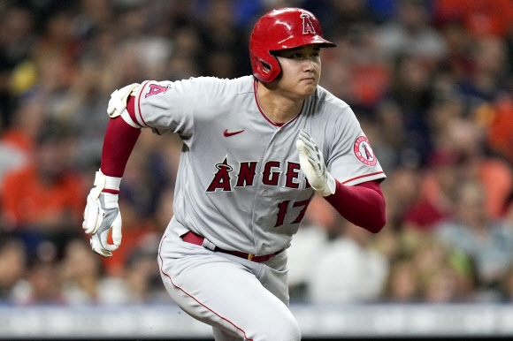

일본 야구 역사상 투타 모두 성공적으로 해낸 유일한 선수인 데다가 플레이 스타일마저도 정확한 컨트롤로 100마일의 속구를 윽박지르는 강속구 유형의 에이스 투수에 홈런 20개 이상을 치는 슬러거 타자인 만화에서만 볼 수 있던 스타일의 타자이기 때문이다.
여기에 외모도 잘생겼고 키도 매우 크며 미담도 많을 정도로 좋은 인성을 지녔다고 알려졌다. 게다가 메이저리그에 진출해 첫해부터 신인왕을 수상하고 2021년부터 완벽한 몸상태와 적응도 덕분에 훌륭한 성적을 내어 아시아인 최초 만장일치 MVP라는 금자탑을 쌓고 2022년에도 좋은 페이스로 기록을 써내려가는 오타니의 모습 덕분에 일본 현역 스포츠 선수들 중에서 팬들과 미디어로부터 가장 뜨거운 국민적 관심을 받고 있는 슈퍼스타이자 스즈키 이치로에 버금가는 국민영웅 수준으로 자리매김했다.